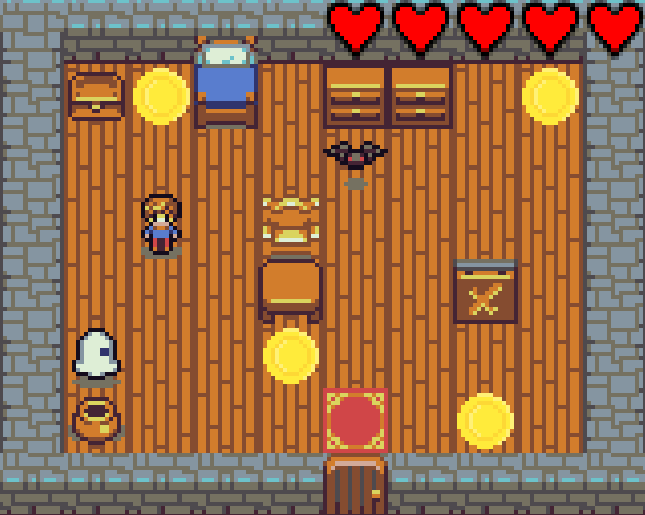

Développeur · BUT Informatique · IUT d'Orsay
Passionné par le développement logiciel et les technologies numériques, je recherche une alternance de 24 mois pour approfondir mes compétences techniques dans un environnement professionnel stimulant.
Passionné par le développement informatique et les technologies numériques, je souhaite poursuivre ma formation en apprentissage afin de renforcer mes compétences techniques et opérationnelles.
Le parcours « développement et réalisation d'applications » que j'intégrerai à la rentrée de septembre 2026 me permettra d'acquérir des compétences solides et directement mobilisables dans votre environnement professionnel.
Fort de plusieurs expériences, je fais preuve de sérieux, rigueur et sens des responsabilités. Doté d'un très bon relationnel et d'un véritable esprit d'équipe, je continuerai à approfondir mes compétences en développement.
Parcours « Développement »
IUT d'Orsay — Université Paris-Saclay
Spécialités Mathématiques & Physique-Chimie
Lycée privé Saint-Louis Saint-Clément — Viry-Châtillon

Développement d'un jeu vidéo complet en C++ en binôme. Implémentation des mécaniques de gameplay (logique du jeu, interactions, animations) et gestion des tests de qualité.
Apprentissage du piano en autodidacte. Pratique régulière axée sur les compositions contemporaines et la musique d'animation japonaise.
Passionné de jeux vidéo depuis l'enfance, avec un intérêt particulier pour les titres compétitifs en ligne. Cette passion est à l'origine de mon attrait pour le développement de jeux.
Football, basketball et volleyball en loisir. Les sports d'équipe renforcent ma capacité à collaborer, communiquer et m'adapter sous pression.
Apprentissage du japonais par intérêt personnel pour la culture et les médias japonais. Niveau C1 en anglais, B2 en espagnol.
Mention Bien
Score 470
Niveau Professionnel
Prévention et Secours Civiques
Disponible pour une alternance dès septembre 2026 — 2 jours/semaine la 1ère année, 3 jours/semaine la 2e année.